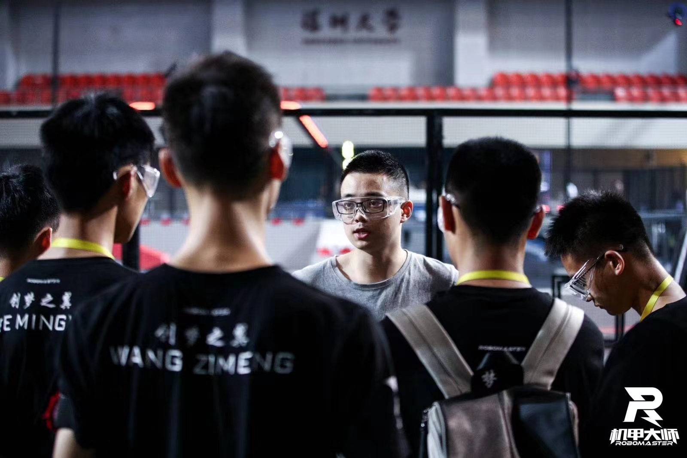
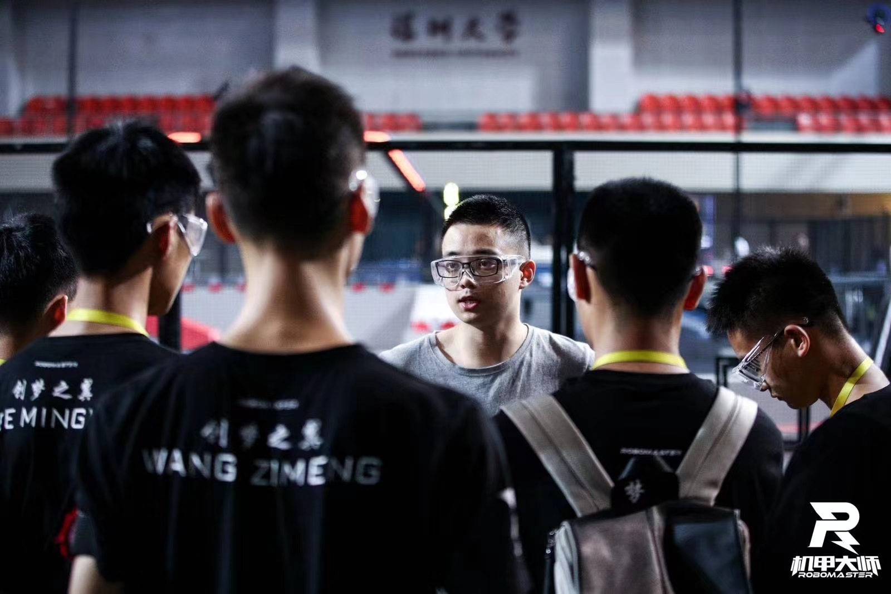
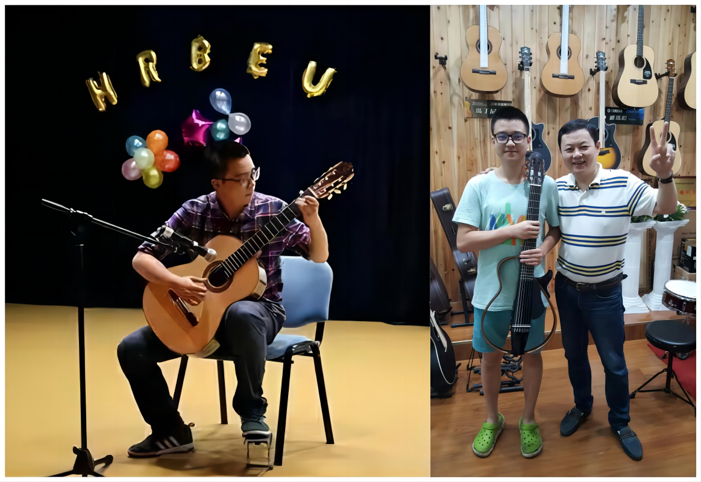
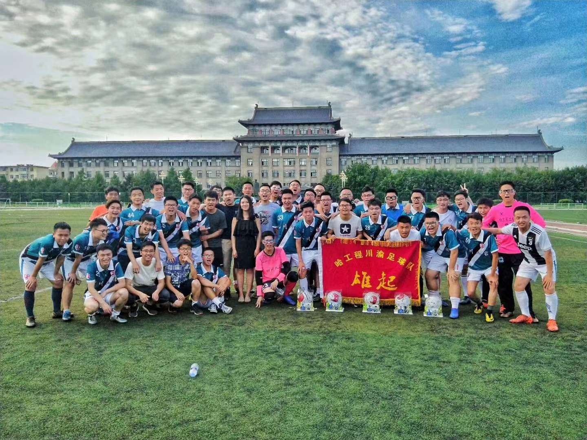
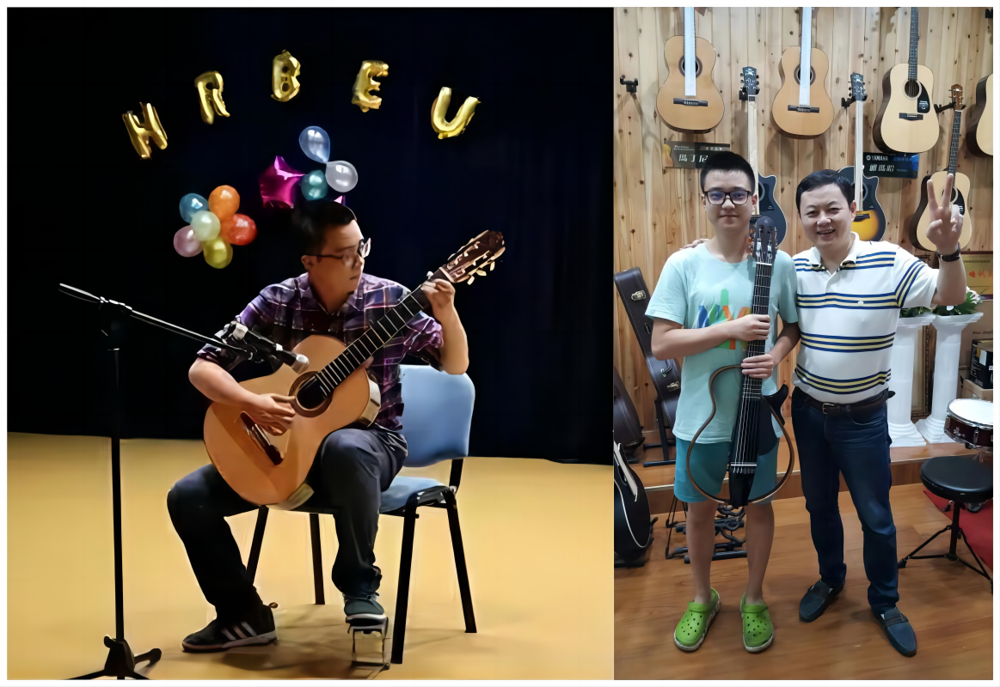
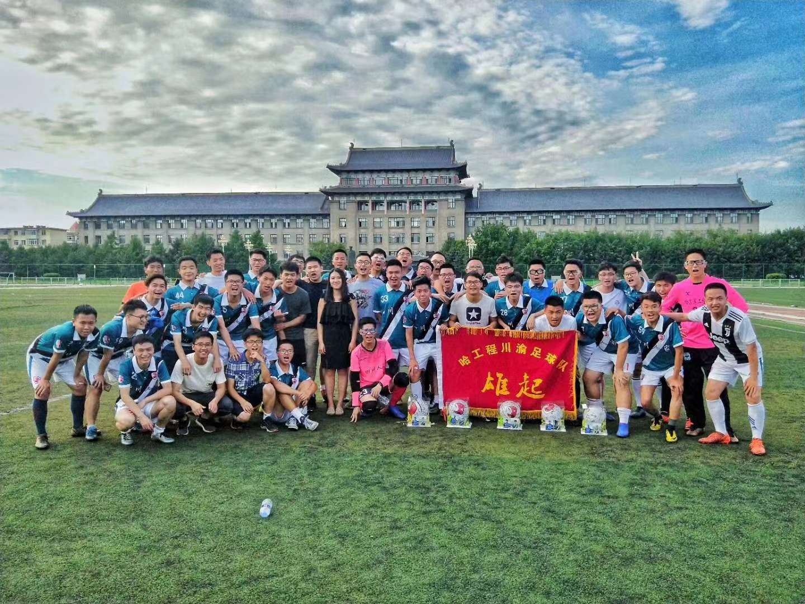

JIANG Ruiqi
蒋锐祺
Basic Information
- Male / 1997-09
- Research Assistant
Contact
Academic Experience
- Master Chongqing University - Control Science and Engineering (Supervisor: WU Zhou)
- Bachelor Harbin Engineering University - Automation (Supervisor: ZHANG Lanyong)
Skill
 

 



Publications
• Jiang R., Zeng S., Wu Z.*, Deep-chain echo state network with explainable temporal dependence for complex building energy prediction, IEEE Transactions on Industrial Informatics, 2023, 19(1): 426-435.
• Wu Z.* and Jiang R., Time-series benchmarks based on frequency features for fair comparative evaluation. Neural Computing and Applications, 2023: 1-13.
• Jiang R., Wu Z.*, Ling R., Machine learning model to predict electricity demand and thermal generation during the pandemic, 2021 China Automation Congress (CAC). IEEE, 2021: 4690-4695.
• Zeng S., Jiang R., Wu Z.*, Multi-step wind power forecast based on multiple echo states networks, International Conference on Neural Computing for Advanced Applications. Springer, 2022: 302-313.
• Sun Y., Xu J., Jiang R., et al., An Improved Echo State Network Model for Spatial-Temporal Energy Consumption Prediction in Public Buildings, International Conference on Neural Computing for Advanced Applications. Springer, Singapore, 2021: 83-95.
• Lin, J., Han, Y., Su, Y., Wang, Y., Zhang, Z., Jiang, R. Hydrodynamic performance of a Magnus anti- rolling device at zero and low ship speeds. Ocean Engineering, 229, 109008.
• Jia X, Jiang, R, Qi H, Liu J and Wu Z*. A multi-style interior floor plan design approach based on generative adversarial networks, International Conference on Neural Computing for Advanced Applications. Springer, 2023: 491-506.
• Jiang, R and Zhou Wu*. ComESN: compressive echo state network for multi-task time-series prediction. Accepted by IEEE ISPCE-AS 2023.
• (Patent) A multi-step wind power prediction approach based on deep chain echo state network and variational mode decomposition, 2022.
• (Patent) A photovoltaic electricity prediction based on chain echo state network temporal-spatial modeling and particle swarm optimization, 2023.
• (Patent) An intelligent power management system and workflow for unmanned semi-submarine, 2019.
• (Patent) An experimental teaching platform based on a real quadrotor flying model, 2018.
• Ma, Z., Xu W., Wang Z., Jiang R.., Liu F., Design of micro quadrotor experiment platform, Laboratory Science (Chinese Journal),2018.
Awards
· 2022 Chongqing University A-level Scholarship
· 2022 Chongqing Innovation Advanced Individual Student
· 2021 Chongqing University B-level Scholarship
· 2021 Chongqing University Innovation Advanced Individual Student
· 2021 20th National College Students Robot Competition “Robomaster” - National Second Prize
· 2021 20th National College Students Robot Competition “Robomaster” - First Prize in North Division
· 2021 20th National College Students Robot Competition “Robomaster” - First Prize in North Division Individual Competition
· 2021 20th National College Students Robot Competition “Robomaster” - First Prize in Harbin League
· 2021 20th National College Students Robot Competition “Robomaster” - First Prize in Harbin Division Individual Competition
· 2020 Chongqing University A-level Scholarship
· 2020 19th National College Students Robot Competition (Online) “Robomaster” - National Second Prize
· 2019 18th National College Students Robot Competition “Robomaster” - National Third Prize
· 2019 18th National College Students Robot Competition “Robomaster” - National Second Prize in Individual Competition
· 2019 18th National College Students Robot Competition “Robomaster” - Third Prize in North Division
· 2019 18th National College Students Robot Competition “Robomaster” - First Prize in North Division Individual Competition
· 2019 "Internet +" - Heilongjiang Province Sliver Prize
· 2019 "Internet +" - Heilongjiang Province Bronze Prize
· 2019 The National College Students Electronic Design Competition (TI Cup) - Division First Prize
· 2018 National Marine Vehicle Design and Production Competition - National Grand Prize
· 2018 National Marine Vehicle Design and Production Competition - National Second Prize -1
· 2018 National Marine Vehicle Design and Production Competition - National Second Prize -2
· 2018 17th National College Students Robot Competition “Robomaster” - Third Prize in North Division
· 2018 University Robot Innovation Competition of China - Finalist Award
· 2017 16th National College Students Robot Competition “Robomaster” - National Third Prize
· 2017 16th National College Students Robot Competition “Robomaster” - First Prize in North Division
(There are several college-level awards and two students' national projects not listed.)
Research Experience & Social Service
-
The Robot Team of Harbin Engineering University
-
[Position] Team Leader and Leader of Control & Electronics Group
-
[1] Robots tasks and working flow design
[2] Programming all robots embedded control code
[3] Design Inertial Gyro Module and Super Caps Module
[4] Management
-
[Position] Team Leader and Leader of Control & Electronics Group
-
The Artificial Intelligence Institute of Chongqing University
-
[Position] Postgraduate student & Supervisor assistant
-
[Position] Postgraduate student & Supervisor assistant
-
Reviewer of Neural Computing and Applications
-
Drone Path Planning & Scheduling.
-
[Position] In Charge of Overall Design & Simulation Group
-
[Position] In Charge of Overall Design & Simulation Group
-
Unmanned Underwater Robot Research and Development
-
[Position] In Charge of Control & Electronics
-
[1] Programming computer control software
[2] Programming the embedded code of robots
-
[Position] In Charge of Control & Electronics
-
Magnus Anti-rolling Device Development
-
[Position] In Charge of Control & Electronics
-
[1] Programming the embedded code of robots
[2] Analysis the sensor data
[3] Assist write manuscript
-
[Position] In Charge of Control & Electronics
-
Hebei Hongan Company’s Smart House Device Development
-
[Position] Technical Consultant
-
[1] Programming the embedded frames
[2] Assist analysis the sensor data
-
[Position] Technical Consultant
-
Autonomous Warehouse Robot
-
[Position] Porject Leader
-
[1] Programming the embedded code
[2] Collaboration on programming computer vision code
-
[Position] Porject Leader
-
Unmanned Water Quality Detection Hydrofoil
-
[Position] Project Vice Leader and In Charge of Control & Electronics
-
[1] Programming the embedded control code
[2] Collaboration on design mechanical structure
-
[Position] Project Vice Leader and In Charge of Control & Electronics
Open-source/Related Website
(1) The Embedded project of Robomaster infanty robot,
(2) ESN-based time series prediction algorithms.
(3) NCAA2022 Time-series dataset.
(4) NCAA2023 Time-series prediction competition leaderboard.
Updated on 23/10/2023.